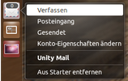
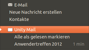
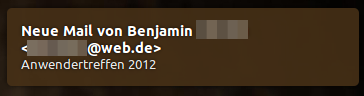
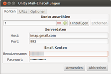
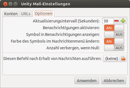

Unity Mail
Dieser Artikel wurde für die folgenden Ubuntu-Versionen getestet:
Ubuntu 14.04 Trusty Tahr
Zum Verständnis dieses Artikels sind folgende Seiten hilfreich:
Unity Mail  ist eine kleine Applikation, welche über eingehende E-Mails benachrichtigt und anzeigt, wie viele E-Mails noch ungelesen sind. Sie integriert sich im Nachrichtenmenü und zeigt dort die Betreffzeilen der ungelesen E-Mails an. Zum Lesen der E-Mails wird der Browser geöffnet und die jeweilige Webanwendung aufgerufen (Standard: Googlemail).
ist eine kleine Applikation, welche über eingehende E-Mails benachrichtigt und anzeigt, wie viele E-Mails noch ungelesen sind. Sie integriert sich im Nachrichtenmenü und zeigt dort die Betreffzeilen der ungelesen E-Mails an. Zum Lesen der E-Mails wird der Browser geöffnet und die jeweilige Webanwendung aufgerufen (Standard: Googlemail).
Derzeit werden nur IMAP-kompatible Server unterstützt. Unity Mail verwendet eine verschlüsselte Verbindung, wenn dies vom Server unterstützt wird.
|  |
| Unity Mail im Startmenü |
|  |
| im Benachrichtigungs-Menü |
|  |
| Popup - Benachrichtigungsfenster |
Installation¶
Unity Mail kann bis einschließlich Ubuntu 15.04 direkt aus den offiziellen Paketquellen installiert werden [1]:
unity-mail (universe)
 mit apturl
mit apturl
Paketliste zum Kopieren:
sudo apt-get install unity-mail
sudo aptitude install unity-mail
PPA¶
Die aktuelle Version ist über das "Personal Packages Archiv" (PPA) [2] des Entwicklers erhältlich.
Adresszeile zum Hinzufügen des PPAs:
ppa:robert-tari/main
Hinweis!
Zusätzliche Fremdquellen können das System gefährden.
Ein PPA unterstützt nicht zwangsläufig alle Ubuntu-Versionen. Weitere Informationen sind der  PPA-Beschreibung des Eigentümers/Teams robert-tari zu entnehmen.
PPA-Beschreibung des Eigentümers/Teams robert-tari zu entnehmen.
Damit Pakete aus dem PPA genutzt werden können, müssen die Paketquellen neu eingelesen werden.
Nach dem Aktualisieren der Paketquellen erfolgt die Installation wie oben angegeben.
Konfiguration¶
|  |  |
| Einstellungen / Konten | Einstellungen / Optionen |
Das Programm kann anschließend sofort gestartet und konfiguriert werden [3]. Um Unity Mail zu konfigurieren, klickt man mit der rechten Maustaste  auf das Symbol im Panel und dort auf den Punkt "Konto-Eigenschaften ändern". Dort muss der IMAP-Server und der Port angegeben werden. Zusätzlich müssen Benutzername und Passwort eingetragen sein. Bestätigt werden die Eingaben mit einem Klick auf "Anwenden".
auf das Symbol im Panel und dort auf den Punkt "Konto-Eigenschaften ändern". Dort muss der IMAP-Server und der Port angegeben werden. Zusätzlich müssen Benutzername und Passwort eingetragen sein. Bestätigt werden die Eingaben mit einem Klick auf "Anwenden".
Unter dem Reiter "URLs" können die Links angeben werden, welche geöffnet werden, wenn man auf die Menüeinträge klickt. Ändert man sie nicht, wird Googlemail geöffnet.
Unter dem Reiter "Optionen" kann das Verhalten von Unity Mail genauer definiert werden. Man kann zum Beispiel beim Erhalt einer Nachricht einen bestimmten Befehl ausführen lassen.
Problembehandlung¶
Neue Mails werden nicht angezeigt¶
Ältere Versionen prüfen nur den Posteingang. Werden E-Mails automatisch in andere Ordner verschoben, dann werden diese von Unity Mail nicht angezeigt. Damit Unity Mail auch andere Ordner überprüft, muss man in der Konfigurationsdatei ~/.config/unity-mail.conf eine Zeile anfügen [4]. Beispiel:
[General] ExtraFolders = BENUTZERNAME@gmail.com:Unterordner1, BENUTZERNAME@gmail.com:Unterordner2
 Übersichtsseite
Übersichtsseite- Erstellt mit Inyoka
-
 2004 – 2017 ubuntuusers.de • Einige Rechte vorbehalten
2004 – 2017 ubuntuusers.de • Einige Rechte vorbehalten
Lizenz • Kontakt • Datenschutz • Impressum • Serverstatus -
Serverhousing gespendet von